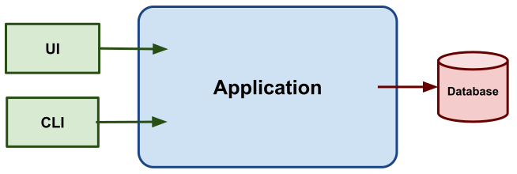
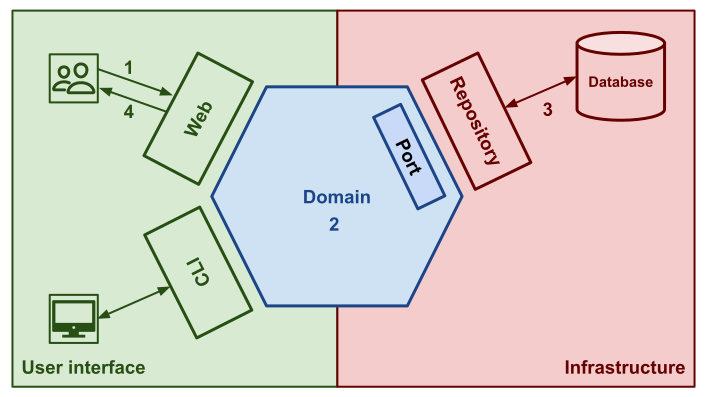

In this blog post, I would like to explain the basics of hexagonal architecture thanks to a simple example: a product catalogue. The catalogue manager can add new products through a user interface and the nightly cron task imports new products from the ERP.
Before going deeper into hexagonal architecture, let’s see what we need to create the product management application. We need two entry points: the first one will be consumed by the graphical client and the other one will be used by the cron task. Then, we will need another piece of code which will be in charge of persisting product data into storage.

What is hexagonal architecture?
The hexagonal architecture, or ports and adapters architecture, is an architectural pattern used in software design. It aims at creating loosely coupled application components that can be easily connected to their software environment by means of ports and adapters. This makes components exchangeable at any level and facilitates test automation.
There are three main areas in the hexagonal architecture: The primary adapters (user interface) are the whole application entry points that can be consumed by clients like a UI or a CLI. The secondary adapters (infrastructure) connect the application to tools like the database, file system, etc. The domain is all pieces of code that represent the problem we are solving. This part must be side-effect free (it must not use any tools).
Domain
The domain is the area where we solve our business problems no matter the technical constraints. We can start by designing the product aggregate.
type Name = string;
type Description = string;
export class Product {
constructor(
private name: Name,
private description: Description
) {}
toState(): string[] {
return [this.name, this.description];
}
}
As I said, we need to save products into the database but we don’t mind if the database is PostgreSQL, MySQL or whatever in the domain. We will define an abstraction (an interface) to avoid accessing any technical asset from the domain. This interface which is called a port will specify how to store a new product from a business point of view. This is nothing more than applying the dependency inversion design pattern.
export interface ProductCatalog {
add(product: Product): void
}
What about testing?
Moving IO as far as possible from your domain code is really convenient because it eases unit testing. We will mainly test this part of the application with unit testing. It offers a very short feedback loop, it will help you to design your domain step by step without setting up the whole application.
Tip: I’ve written a blog post about unit testing that explains why testing can be hard. It mainly gives you tips to move IO outside your code to make it testable.

Coupling rules
The domain code must not use any IO: any tools like your database, randomness, or actual datetime, nor depend on the primary and the secondary adapters. We will explain what they are in the next sections.
Secondary adapters (Infrastructure)
The secondary or driven adapters implement the ports defined in the domain. In our example, the adapter will be a PostgresProductCatalog class that implements the ProductCatalog interface (port). Its purpose will be to store product data in a database.
class PostgresProductCatalog implements ProductCatalog {
constructor(private pg: Client) {}
add(product: Product) {
this.pg.query(
'INSERT INTO product (name, properties) VALUES ($1, $2)',
product.toState()
);
}
}
An advantage of this architecture is that we can simply delay choices. At the beginning of a project, it may be hard to choose the right tools because you still need to learn and understand the business. In that case, you can implement an in-memory adapter, it will work the same way as the previous one but it will only keep product aggregate in memory.
class InMemoryProductCatalog implements ProductCatalog {
private products: Product[];
add(product: Product) {
this.products = [product, ...this.products];
}
}
Tip: This adapter can be used in your test suites because it lets you bypass your tools constraints like foreign key constraints when we use a database, for instance.
What about testing?
The part of the application is mainly covered by “integration” or “contract” tests. Those tests ensure that the tools used by the application work as expected. For example, you are able to save and query your database.
Tip: I encourage you to test all implementations of a given port with the same test because it will ensure they work the same way.
Coupling rules
The infrastructure code only depends on the domain code.
Primary adapters (User interface)
The primary adapters or driving adapters are entry points that describe how the application is consumed by the clients. Their purpose is to tell the domain what to do. Actually, it can be a Web controller or CLI command for instance.
In our example, we need two adapters: a web controller and a CLI command. Both of them will execute the same action, they will save product data but they have different input and output. The first one takes JSON and returns an HTTP response and the second one takes input and returns code status.
try {
this.productCatalog.add(new Product(
request.get('name'), // get name argument for cli command
request.get('description'), // get description argument for cli command
))
return new HttpResponse(201); // return 0 for cli command
} catch (Error) {
return new HttpResponse(500); // return 1 for cli command
}
As you see, the only differences are the input and output of the adapter. We need to refactor this code to avoid duplication between both primary adapters. It should be extracted into a dedicated business service.
Tip: These business services can be written using the command and command handler patterns. I’ve written a blog post that explains these design patterns:

I’ve written a bunch of articles about how to handle a command, validate its data, handle user permissions, and so on. Take a look at these articles:

What about testing?
There are several ways to test primary adapters.
First option: the easiest one, your application only has one primary adapter. I advise you to write an acceptance test that boots the application and checks that the whole application works for each business use case.
Second option: the complex one, your application has several primary adapters like our example (web and CLI). I advise you to check that your command handler works as expected thanks to an acceptance. That way you ensure your handler will work as expected for both adapters. Thus, you can write a test to ensure that the adapters return the right output (HTTP response or code status) depending on the case.
Coupling rules
The user interface code only depends on the domain code.
Flow of control

The application flow goes from the user interface (1) through the domain (2) to the infrastructure (3) then goes back through the domain (2) to the user interface (4).
Example: The UI sends data to an HTTP controller (1), then a product aggregate is created (2), then the repository saves data into the database (3), and finally the web controller sends a 200 HTTP response (4). We don’t need step (2) because nothing happens in the domain after the product creation.
Code organization
The domain contains the aggregates, ports, business services and so on. Most importantly, they must not use IO and must be business oriented.
The infrastructure contains all secondary adapters that use external tools (IO) like your database.
The user interface contains all primary adapters that are the application entry points. Users and machines use them to interact with the application.
src
├── domain
│ ├── ProductCatalog.ts
│ └── Product.ts
├── infra
│ ├── InMemoryProductCatalog.ts
│ └── PostgresProductCatalog.ts
└── user-interface
├── CliCreateProduct.ts
└── WebCreateProduct.ts
Note: I decided to split each class/interface into a dedicated module because I wanted to show you where things are. Feel free to organize your module as you wish.
Thanks to my proofreader @LaureBrosseau.